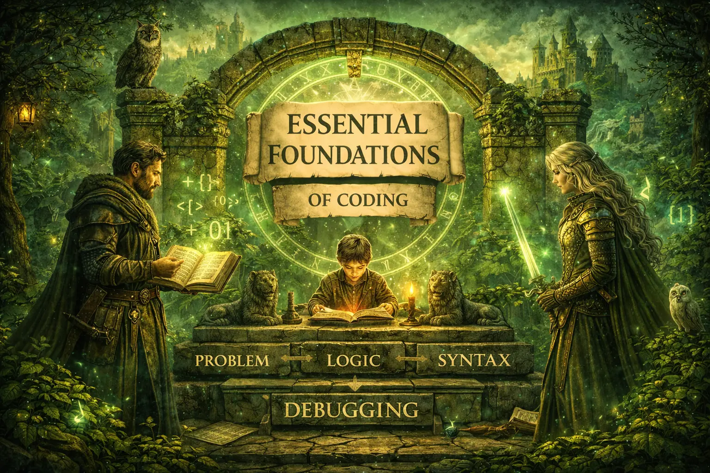
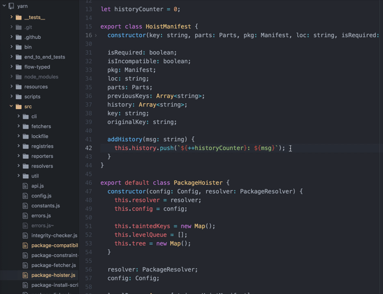

Learning · Sep 2020 · 5 min read
9 Computer Science Concepts Before Learning Programming
Essential foundations for every beginner — the fundamentals that bridge the gap between having no idea and becoming a true coder of the realm.

If you are here, I suppose you have no background in coding or computer science and are starting from the complete basics. But before you start writing code to develop cool stuff, there are some fundamentals that will help you bridge the gap between having absolutely no idea and being a true beginner in coding.
0. What Does a Machine Understand?
The only thing that a machine can understand is Binary, sometimes referred to as machine code or object code — a series of bits of 0s or 1s. So at the end of the day, whatever language you write your code in, it will be converted to machine-readable binary form by a compiler or interpreter.
This is the fundamental truth: computers speak only in zeros and ones. Everything else is translation.
1. What Is a Programming Language?
To ask a machine to do something, we need to give it a command. But since machines only understand binary, and humans cannot reasonably speak or write in binary, we created programming languages.
A programming language is essentially a set of commands with specific rules that a programmer can use to interact with a computer. It's a bridge between human language and machine language. Your code must be converted to binary to be finally understood by a machine.
2. What Is a Compiler and Interpreter?
After you write your desired instructions in any programming language, those instructions need to be translated to machine-readable form. That's done by a compiler or interpreter.
- Compiler: Translates all the instructions written at once before the program runs.
- Interpreter: Translates the program one statement at a time as it executes.
Both serve the same purpose—converting human-readable code to machine instructions—but they take different paths to get there.
3. What Is an IDE?
Now you know what a programming language is and what happens to your code after you write it. But where exactly are you going to write your code?
IDE stands for Integrated Development Environment. It's software that provides everything you need in one place: a text editor where you can write code, compilers or interpreters, debuggers, and many other tools.
Alternatively, you could do it all manually—use a standalone text editor like Notepad or Sublime, compile your code separately, and run it. But IDEs can save enormous amounts of time, not just because they automate these steps but also because they include features like auto-complete, syntax highlighting, and real-time error detection.

4. Careers in Programming
The realm of programming is vast. Let's look at different areas you can work in:
- Web Development
- Android App Development
- iOS App Development
- Machine Learning & AI
- Data Science
- Game Development
- Network and Security
- Backend Systems
- And many more...
Each path has its own tools, languages, and specializations. But don't get overwhelmed by choice yet.
5. Choosing a Language
You now know the basics and may have a preferred area you want to work in. But before you jump into any specialized field, you need to develop problem-solving skills using one programming language.
After you become comfortable with the language, then you should learn data structures and algorithms. Alongside that, you can start learning about the field you're interested in.
Which Language to Start With?
C/C++, Java, and Python are the most preferred languages to start with. Among the three, Python is the easiest. However, many recommend starting with C/C++ or Java for one simple reason: the fact that Python is easy to learn may hurt you when you try to learn another language later.
Learning a more demanding language first builds better habits and deeper understanding of how computers actually work.
6. Googling: A Superpower
Here's a truth they don't always teach: Google is the best friend of a programmer.
Whether you've just started coding or you've been doing it for years, you will encounter errors that you don't understand. Being able to convert an error into searchable terms is an important skill. As a programmer, you cannot live without this skill.
Whenever you see an error you don't understand or want to do something and have no idea how, don't run to a teacher or a senior—Google it first. In the starting days, take it as a challenge to find the answer because you're probably not going to face anything no one has seen before. Work through the search results, read discussions, and learn.
In this way, you will develop the attitude of not giving up, be more patient, and become better at problem-solving through research.
7. What Is Debugging?
Debugging is the process of identifying and removing errors from computer hardware or software.
Sometimes your code will run without any error but won't do what you intended it to do. That's commonly referred to as a bug in software development. The process of removing it is debugging.
Debugging can be done by:
- Going through your code manually and trying to figure out what's happening (called a dry run)
- Using specialized tools called a debugger that help you trace execution step by step
Debugging is part of every programmer's daily life. Learning to do it well will save you countless hours.
8. Helpful Resources
As you begin your journey, these resources will be invaluable:
Stack Overflow
Stack Overflow is a website where programmers can get free help with their code. If you get stuck and want to ask a question, search for it first. The answer you need might already exist. If you can't find it, create an account and post your question.
Educational Platforms
There are tons of educational sites with programming tutorials:
- Codecademy — Interactive coding lessons
- Udemy — Paid and free courses on all topics
- Udacity — Specialized nanodegree programs
- Team Treehouse — Project-based learning
- Khan Academy — Free computer science courses
Before You Go
All the topics I've mentioned can have their own detailed blogs explaining them in depth—which I'd surely write in the future if the realm demands it. For now, just knowing what they are and understanding their purpose will be fine.
Remember: The thinking process behind solving a problem is much more important than just being able to solve the problem. These fundamentals are your foundation. Build on them with patience, curiosity, and persistence.